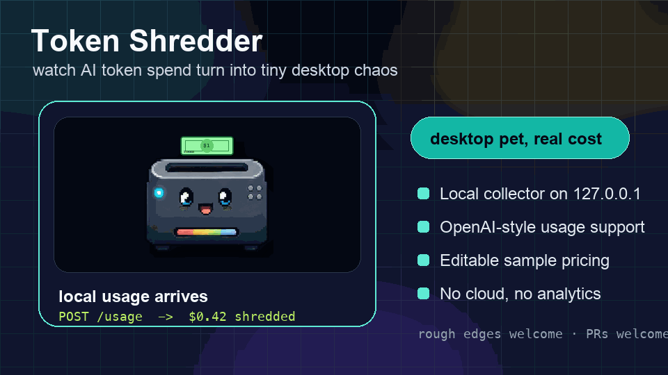
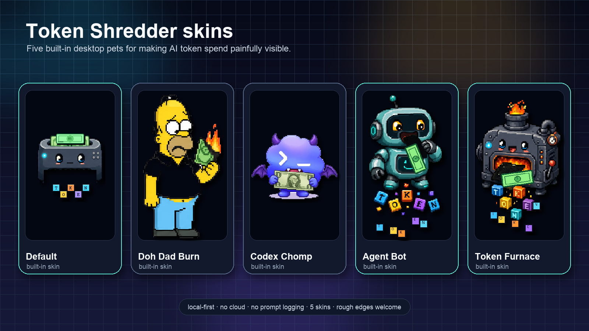

1. 打开 App
下载 macOS 版本，打开 Token Shredder，右键桌面宠物进入后台。
一个本机运行的 AI token 成本桌面宠物。把 Agent、脚本或 SDK 的 usage 发到本机， 它会把 AI 消耗实时碎成 TOKEN 字块。第一次体验不需要 API Key。
这是一个早期开源项目，由非专业开发者在 AI 辅助下完成。能用，但肯定还有粗糙的地方。 欢迎反馈、隐私 review、打包帮助和新的原创皮肤。

下载 macOS 版本，打开 Token Shredder，右键桌面宠物进入后台。
第一屏直接选择：一键试玩、配置 provider，或复制 POST usage 示例。
复制后台 curl，或在克隆仓库后运行 examples。
复制中文/英文传播帖，或从分享面板导出 PNG 卡片。

发送自定义 usage 或 OpenAI-style usage 到本机 collector，宠物会按估算成本反应。
先点击本机试玩，看懂核心体验后再接真实 provider，还能复制 Agent 接入说明。
应用监听 127.0.0.1，只需要 usage 数字，不需要记录 prompt、completion 或 API key。
配置导出不含 API Key；session 可导出；Release 带 SHA256 manifest。
curl -X POST http://127.0.0.1:17391/usage \\
-H "Content-Type: application/json" \\
-d '{"source":"my-agent","inputTokens":120000,"outputTokens":45000}'